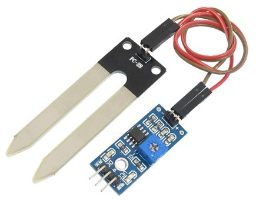
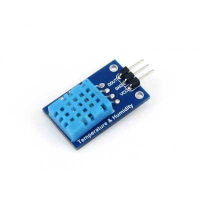
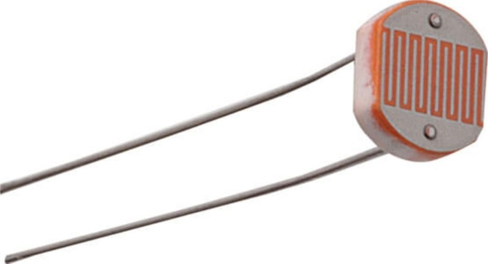
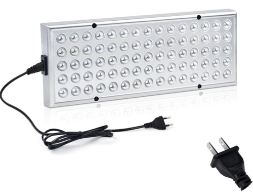
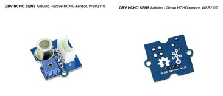
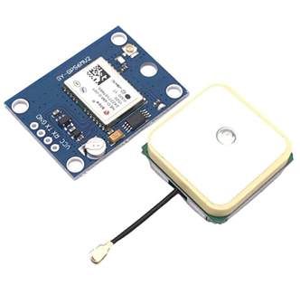

Technologieën in een praktijk- en businesscasus
Technologieën in een praktijkcasus
Bij het project zijn verschillende technologieën onderzocht, welke toegepast zouden kunnen worden in het product van de projectorganisatie. Aangezien het prototype begin december pas bij de organisatie is aangekomen, hebben wij niet de mogelijkheid gehad de technologieën aan te schaffen en toe te passen. Daarom hebben wij de potentiële technologieën bekeken, die een aanvulling kunnen zijn op het product. Allereerst worden de technologieën beschreven, welke ook gebruikt zijn in de lessen Technology. Vervolgens worden nieuwe technologieën beschreven. Deze sensoren worden allemaal kort beschreven. De uitgebreidere variant is verstuurd naar de betrokken partijen.
Grondvochtigheid meter
Het is belangrijk om voor de gebruikers van de plantenunit om te weten hoe de vochtigheid van de grond van de plant ervoor staat. Zo kunnen ze ook in de gaten houden om de plant genoeg water krijgt via het reservoir. Hierdoor kunnen ze voorkomen dat de plant uitdroogt en ze op tijd weten wanneer het grondvochtigheid gehalte van de plant afneemt.
Er is hier gekozen voor een sensor die makkelijk te gebruiken is en de mogelijkheid heeft om een notificatie te verzenden om aan te geven wanneer de plant water nodig heeft (opencircuit.nl, 2020).
Luchtvochtigheid & Temperatuur meter
Ook is de luchtkwaliteit erg belangrijk. Het gebruik van kachels kan flinke gevolgen hebben voor de luchtkwaliteit. Het kan namelijk gebeuren dat de lucht door de kachels droger wordt, wat van invloed gaat zijn op de gezondheid van de mensen. In een droge lucht blijven virussen namelijk langer leven dan in een vochtige lucht.. Hierdoor is het voor de plantenunit goed om te weten hoe de luchtvochtigheid zich ontwikkelt. Zo kan er actie ondernomen worden wanneer de luchtvochtigheid buiten de 40 & 60% treed (Essent, 2020).
Deze chip kan temperaturen tussen de 0° C en de 50 ° C meten. Het meet bereik van de vochtigheid ligt bij deze sensor tussen de 20% en 90%, ook dit is genoeg voor de locaties waar de planten units gebruikt zullen worden (robotshop.com, 2020).
Licht sensor en lampen
Verder is licht ook belangrijk. Planten hebben namelijk voldoende licht nodig om te blijven overleven. Door middel van een sensor die meet hoeveel licht de plant ontvangt kan dit in de gaten gehouden worden. Een kamer plant heeft gemiddeld zo een 5 uur zonlicht per dag nodig (studioplant.nl, 2020).
Deze LDR Sensor is een ideale kleine sensor die makkelijk weg te werken is en niet te veel ruimte op neemt. Deze sensor kan ook gekoppeld worden aan lampen die de plant extra ligt geven wanneer dit nodig is. Deze lampen kunnen bijvoorbeeld als de plantenunit al lange tijd geen zonlicht heeft gehad (otronic.nl, 2020).
Formaldehyde meter
Formaldehyde is een stof die in de lucht kan zitten en zeer schadelijk voor de gezondheid kan zijn als deze in een verhoogde concentratie aanwezig is. Wanneer dit het geval is, is het een van de meest schadelijke stoffen in de binnen lucht. Formaldehyde is een onzichtbaar gas die een sterke onaangenamen en prikkelende geur kan afgeven. De bronnen waar formaldehyde uit kan ontstaan zijn spaan en vezelplaten, tapijt, lijm, meubilair en interieurstoffen. De gevolgen die formaldehyde kan hebben zijn hoofdpijn, irritatie een de slijmvliezen en irritatie aan de ogen.
Zo kan formaldehyde op verschillende manieren gemeten worden. Er kan gebruik worden gemaakt van een complete meter die stoffen zoals formaldehyde kan meten. Ook kan er gebruik gemaakt worden van sensoren die ingebouwd kunnen worden in bijvoorbeeld de SMARTTY Units. Dit is de HCHO Sensor (reichelt.nl, 2020).
GPS
Tot slot is het voor de gebruiker ook belangrijk om te weten waar de planten unit staat binnen een gebouw, als er bijvoorbeeld meer plantenunits in gebruik zijn. Hiervoor zal een GPS gebruikt worden om te identificeren waar de unit gevonden kan worden als deze bijvoorbeeld van water voorzien moeten worden.
De sensor die gebruikt zal worden is voorzien van een zeer goede antenne waardoor de locatie nauwkeurig gemeten kan worden, Wel moet deze gps-sensor in koppeling worden gebracht waarvan de locatie af te lezen is (Amazon.nl, 2020).
Technologieën in de business
Naast het onderzoek naar potentiële technologische ontwikkelingen voor onze projectorganisatie, kan ook gekeken worden naar de rol van technologie in een business context.
Steeds vaker is het succes van een bedrijf afhankelijk van het optimaal benutten van technologie (Sofigate, z.d.). Doelen zijn niet te bereiken zonder technologie. Technologie maakt bedrijfsprocessen efficiënter en effectiever. Door het laten fuseren van de technologie en de bedrijfsvoering van een organisatie, zal er blijvende waarde worden gecreëerd (Insight24, z.d.). Bedrijfstechnologie beschrijft alle technologie die een organisatie helpt bij het runnen van haar zakelijke en operationele processen. Deze technologie kunnen klantgerichte applicaties en oplossingen zijn, financiële backoffice=systemen of logistieke oplossingen (Sofigate, z.d.).
Digitalisering biedt organisaties nieuwe zakelijke kansen en vereist dat bedrijven een consistente digitale frontline hebben voor interactie met klanten, werknemers en partners. Dit kan bijvoorbeeld door het gebruik van verschillende kanalen, die in connectie staan met elkaar. Om een digitale transformatie tot een succes te maken, moeten bedrijven hun manieren van werken opnieuw uitvinden. Een organisatie moet met succes implementeren. Deze implementaties kunnen onder andere de bijgewerkte vaardigheden van medewerkers zijn, het herontwerpen van processen of het gebruiken van nieuwe digitale oplossingen (Sofigate, z.d.).
Bibliografie
- Amazon.nl, (2020). Guangcailun NEO-6M GPS.
- Essent, (2020). Wat houdt de luchtvochtigheid in huis precies in?
- Insight24, (z.d.). Over ons: Wij helpen bij de transitie van informatie technologie naar Business Technologie.
- opencircuit.nl, (2020). Grond vochtigheid sensor module.
- otronic.nl, (2020). GL5516 LDR Lichtgevoelige weerstand (Photoresistor).
- reichelt.nl, (2020). GRV HCHO SENS Arduino - Grove HCHO-sensor, WSP2110.
- robotshop.com, (2020). DHT11 Temperatuur-Vochtigheid Sensormodule.
- Sofigate, (z.d.). Business TEchnology: Why Business Technology?
- studioplant.nl, (2020). Kamerplanten en licht.
Ga terug naar 'Smart Start' Ga terug naar vorige pagina Ga naar volgende pagina